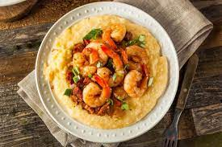

Shrimp and Grits

Ingredients:
- 2C reduced-sodium chicken broth
- 2C 2% milk
- 1/3Cbutter, cubed
- 3/4t salt
- 1/2t pepper
- 3/4C uncooked old fashioned grits
- 1C shredded cheddar cheese
- 8 thick sliced bacon strips
- 1 lb uncooked medium shrimp, peeled and deveined
- 3 garlic cloves, minced
- 1t cajun seasoning
- 4 green onions, chopped
Directions:
- In a large saucepan, bring broth, milk, butter, salt, and pepper to a boil.
- Slowly stir in grits.
- Reduce heat. Cover and cook for 15-20 minutes or until thickened, stirring occasionally.
- Stir in cheese until melted. Set aside and keep warm.
- In a large skillet, cook bacon over medium heat until crisp
- Remove to paper towel.
- Saute shrimp, garlic, and seasoning in bacon drippings until shrimp turn pink.
- Stir in crumbled bacon nad heat through.
- Serve with grits